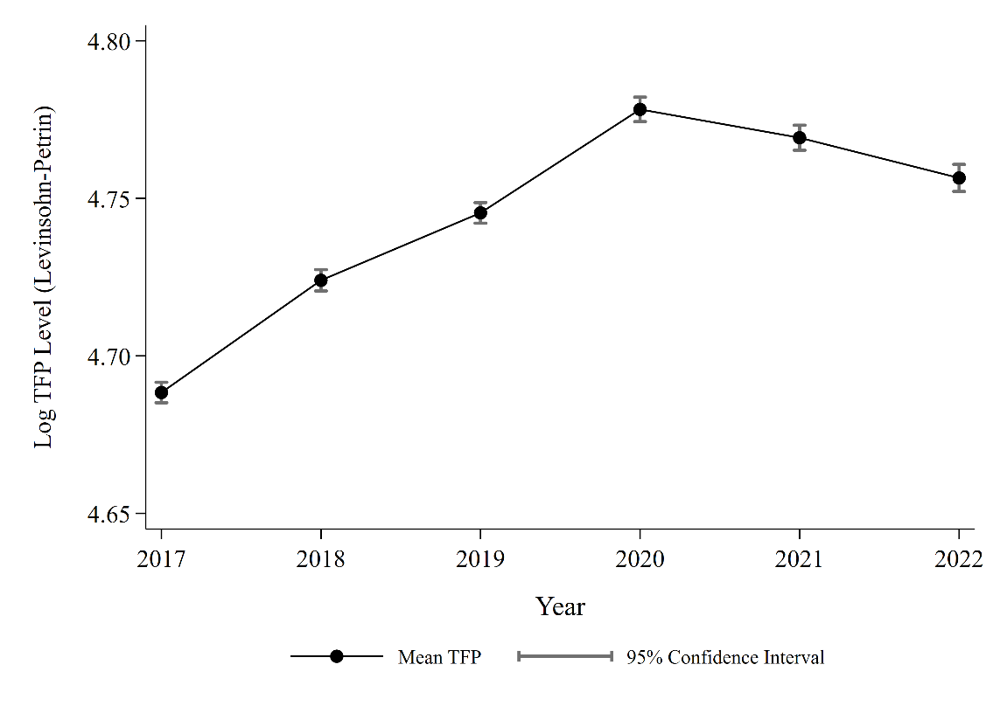

Estimating firm-level TFP from the IBS survey, 2017–2022
Productivity
Manufacturing
Indonesia
Stata
Where does output in Indonesian factories come from? A Levinsohn–Petrin TFP exercise on 148,000 firm-years, from raw survey files to sector-level returns to scale, with the full Stata code.
Author
Al Bahits Annef
Published
November 9, 2026
At a glance
Data:Industri Besar dan Sedang (IBS), BPS, 2017–2022 · 148,617 firm-year observations
Method: Levinsohn–Petrin (2003) production function, Stata 18
Headline: materials carry most of the output elasticity (0.685); mean TFP rose to a 2020 peak, and the frontier–laggard gap was widest that year (0.64 log points)
Industrial policy is back on the agenda. Many developing countries see it as a way to build industrial capacity and drive growth. Firms are where that growth actually happens, and researchers have long studied both how firms shape industrial policy and how they benefit from it.
This project looks at firm-level productivity in Indonesian manufacturing. Productivity is hard to measure directly, so the analysis centers on Total Factor Productivity (TFP), the standard measure of how efficiently a firm turns inputs into output.
The data is the Industri Besar dan Sedang survey (Large and Medium Manufacturing, hereafter IBS) from Statistics Indonesia, covering 2017 to 2022. Everything runs in Stata 18, end to end. The project doesn’t evaluate any specific industrial policy. It’s a practical exercise that shows how to:
Clean and prepare the dataset, including proper deflation of financial variables.
Estimate TFP and its input elasticities.
Build descriptive evidence on firm performance and productivity trends.
Step 1: Cleaning the survey
Each IBS year comes as its own file with year-specific variable names, so cleaning is done one year at a time. Using 2020 as the example, the do-file:
builds a numeric firm ID and the ISIC 2- and 5-digit sector codes;
deflates output with the sector-specific producer price index (IHP, 2010 = 100);
splits labor into production and non-production workers and keeps firms with 20 or more workers (the IBS definition of medium and large);
imputes capital where the opening value is missing, first from the year-end value and then, for firms that lease, from rent paid; capital is deflated with the general wholesale price index (IHPB);
deflates raw materials with the IHPB.
The core of the output deflation looks like this:
* Sector-specific producer price deflator (IHP, 2010 = 100)gen ihp2020 = .replace ihp2020 = 150.43 if disic2 == 10replace ihp2020 = 163.93 ifinlist(disic2, 11, 12)* ... one line per sector group ...gen real_output = (output / ihp2020) * 100gen log_output = ln(real_output)
NoteFull cleaning code for one year (2020)
01_clean_ibs2020.do
* ============================================================* 01_clean_ibs2020.do* Productivity in Indonesian Manufacturing (IBS 2017-2022)* Step 1: Clean and deflate one survey year (2020 shown).* Repeat for 2017-2022, adjusting the year-specific* variable suffixes (e.g. *20 -> *19) and deflators.* Software: Stata 18* Input : ibs2020.dta (BPS Industri Besar dan Sedang; not shared)* Output: ibs 2020.dta (cleaned)* ============================================================use"ibs2020.dta", clear**# Firm IDgendouble firm_id = real(Kipb)format firm_id %12.0fla var firm_id "Firm ID"**# Yearrenameyear annual_operationgenyear = 2020la varyear"Year of the Observation"**# Sector (ISIC)gen disic5 = disic520destring disic5, replacela var disic5 "ISIC Code 5 Digit"gen disic2 = substr(disic520, 1, 2)destring disic2, replaceforcela var disic2 "ISIC 2 Digit"* ============================================================* 1. Firm Output* ============================================================**# Firm Income & Output Deflationlocal RUN_INCOME_BLOCK 1if`RUN_INCOME_BLOCK' == 1 { * 0. Destring raw inputs (yprvcu20 = nominal income)destring yprvcu20, replace * 1. Base nominal output (preserves raw survey data)gen output = yprvcu20 * 2. Drop non-producing firms and firms missing a sector codedropif output == 0 | missing(output)dropifmissing(disic2) * 3. Sector-specific producer price deflator (IHP, 2010 = 100, BPS)gen ihp2020 = .replace ihp2020 = 150.43 if disic2 == 10replace ihp2020 = 163.93 ifinlist(disic2, 11, 12)replace ihp2020 = 153.81 if disic2 == 13replace ihp2020 = 165.41 ifinlist(disic2, 14, 15)replace ihp2020 = 164.88 if disic2 == 16replace ihp2020 = 145.55 ifinlist(disic2, 17, 18)replace ihp2020 = 128.78 if disic2 == 19replace ihp2020 = 138.43 ifinlist(disic2, 20, 21)replace ihp2020 = 123.61 if disic2 == 22replace ihp2020 = 150.01 if disic2 == 23replace ihp2020 = 118.50 if disic2 == 24replace ihp2020 = 130.14 if disic2 == 25replace ihp2020 = 152.09 ifinlist(disic2, 26, 27, 28)replace ihp2020 = 141.04 ifinlist(disic2, 29, 30)replace ihp2020 = 162.53 ifinlist(disic2, 31, 32, 33) * 4. Deflate: (Nominal / Deflator) * 100gen real_output = (output / ihp2020) * 100 * 5. Log ofreal outputgen log_output = ln(real_output) la var output "Firm Total Output Nominal (Rp)" la var ihp2020 "IHP 2020 Deflator (Base 2010=100, by disic2)" la var real_output "Firm Total Output Real (Deflated by Sector IHP)" la var log_output "Firm Total Output Real (in Log)"}* ============================================================* 2. Labor* ============================================================**# Labor (Production vs Non-Production)local RUN_LABOR_BLOCK 1if`RUN_LABOR_BLOCK' == 1 { * 1. Destring raw inputs (l = Indonesian, f = foreign workers)destring lprnol20 lprnof20 lnpnol20 lnpnof20, replaceforce * 2. Headcountsgen prodlab = lprnol20 + lprnof20gen non_prodlab = lnpnol20 + lnpnof20gen labor = prodlab + non_prodlab * Keep firms with 20+ workers (IBS definition of medium/large)dropif labor == 0 | missing(labor)dropif labor < 20 * 3. Logs (ln(0) -> missingfor firms with no non-production staff)gen log_labor = ln(labor)gen log_prodlab = ln(prodlab)gen log_nonprodlab = ln(non_prodlab) la var labor "Total Labor" la var log_labor "Total Labor (in Log)" la var prodlab "Labor: Production Workers" la var log_prodlab "Labor: Production Workers (in Log)" la var non_prodlab "Labor: Non-Production/Other Workers" la var log_nonprodlab "Labor: Non-Production/Other Workers (in Log)" * 4. Firm sizegensize = .replacesize = 0 if labor >= 20 & labor <= 99replacesize = 1 if labor >= 100 la def lbl_size 0 "Medium Firm" 1 "Large Firm" la val size lbl_size la varsize"Firm Size (Categorical)" * 5. Wage billdestring zpdvcu20 zndvcu20 zptvcu20 zntvcu20, replaceforcereplace zpdvcu20 = 0 ifmissing(zpdvcu20)replace zndvcu20 = 0 ifmissing(zndvcu20)gen labor_cost = zpdvcu20 + zndvcu20gen log_labor_cost = ln(labor_cost + 1)gen prod_cost = zptvcu20gen log_prodcost = ln(prod_cost)gen nonprod_cost = zntvcu20gen log_nonprodcost = ln(nonprod_cost) la var labor_cost "Total Labor Cost Nominal (Rp 000)" la var log_labor_cost "Total Labor Cost Nominal (in Log)" la var prod_cost "Labor Cost, Production Workers (Rp 000)" la var nonprod_cost "Labor Cost, Non-Production Workers (Rp 000)" la var log_prodcost "Labor Cost, Production Workers (in Log)" la var log_nonprodcost "Labor Cost, Non-Production Workers (in Log)"}* ============================================================* 3. Capital* ============================================================**# Capitallocal RUN_CAPITAL_BLOCK 1if`RUN_CAPITAL_BLOCK' == 1 {// Flow: (1) impute missing start-of-year capital with end-of-year value (v1115)// (2) impute firms that lease capital from rent paid (ibrvcu20 / 0.10)// (3) drop if still zero (4) deflate with IHPB (general) (5) logdestring ctfpcu20 v1115 ibrvcu20, replaceforcegen capital = ctfpcu20replace capital = v1115 if capital == 0 & v1115 > 0 & !missing(v1115)replace capital = ibrvcu20 / 0.10 if capital == 0 & ibrvcu20 > 0 & !missing(ibrvcu20)dropif capital == 0 | missing(capital)gen real_capital = (capital / 103.55) * 100gen log_capital = ln(real_capital) la var capital "Firm Capital (Rp)" la var real_capital "Firm Capital (Deflated with IHPB Umum)" la var log_capital "Firm Capital (in Log)"}* ============================================================* 4. Raw Materials and Energy* ============================================================**# Raw Materials & Inputlocal RUN_INPUT_BLOCK 1if`RUN_INPUT_BLOCK' == 1 {destring rtlvcu20 eplvcu20, replaceforcegen raw_material = rtlvcu20dropif raw_material == 0 | missing(raw_material) * Deflate with wholesale price index (IHPB), 2020 value = 104.30gen real_materials = (raw_material / 104.30) * 100gen log_material = ln(real_materials) la var raw_material "Raw Materials (Rp)" la var real_materials "Raw Materials (Deflated with IHPB)" la var log_material "Raw Materials (in Log)"gen electricity = eplvcu20gen log_electricity = ln(electricity) la var electricity "Electricity Cost (Rp)" la var log_electricity "Electricity Cost (in Log)"}save"ibs 2020.dta", replace
The cleaned years are then stacked into one panel and declared with xtset:
NoteAppending 2017–2022 into a panel
02_append_panel.do
* ============================================================* 02_append_panel.do* Step 2: Append the cleaned annual files and declare the panel.* Input : ibs 2017.dta ... ibs 2022.dta (outputs of step 1)* Output: appended 2017-2022.dta* ============================================================clearallsetmoreoffuse"ibs 2017.dta", clearforeach yr of numlist 2018/2022 {appendusing"ibs `yr'.dta"}sort firm_id yearlabelvariable firm_id "Firm Unique Identifier"labelvariableyear"Year of Observation"xtset firm_id yearxtdescribesave"appended 2017-2022.dta", replace
Step 2: What the data looks like
Table 1 summarizes the variables used in the TFP estimation. Output is real (deflated) output, labor is production plus non-production workers, capital is the firm’s capital stock, and materials are raw materials used in production. All are in natural logs.
Table 1. Descriptive statistics (all variables in logs)
Variable
Description
Obs
Mean
Std. Dev.
Min
Max
log_output
Real output
148,617
16.453
2.096
4.795
24.980
log_labor
Total labor
148,617
4.293
1.211
0
10.920
log_prodlab
Production labor
148,617
4.094
1.226
0
10.844
log_nonprodlab
Non-production labor
127,110
2.488
1.351
0
9.485
log_capital
Capital stock
148,617
14.088
2.634
1.839
26.592
log_material
Intermediate materials
148,617
15.670
2.290
3.423
24.704
Non-production labor has fewer observations because some firms report no non-production staff, and the log of zero is undefined.
Step 3: Estimating TFP
The estimation follows Levinsohn and Petrin (2003). It assumes a Cobb–Douglas technology with two kinds of labor, and uses intermediate inputs (raw materials) rather than investment as a proxy for productivity shocks that the firm sees but the econometrician doesn’t:
Here \(i\) and \(t\) index firms and years. \(Y_{it}\) is output, \(L^{P}_{it}\) and \(L^{NP}_{it}\) are production and non-production labor, \(M_{it}\) is materials and \(K_{it}\) is capital. The \(\beta\)s are output elasticities, \(\omega_{it}\) is firm productivity, and \(\varepsilon_{it}\) is an idiosyncratic error.
In Stata this is a single prodest call, followed by predicting \(\omega_{it}\) as each firm’s TFP:
Notes: *** p<0.01, ** p<0.05, * p<0.10. Standard errors in parentheses. Intermediate materials proxy for unobserved productivity shocks to address simultaneity bias. Returns to scale is the sum of the estimated elasticities. Source: Author’s own calculation.
Materials dominate. At 0.685, the materials elasticity is several times larger than production labor (0.121), non-production labor (0.131) or capital (0.016). All four are significant at 1%. Returns to scale of 0.9535 point to slightly decreasing returns, and the Wald test rejects constant returns at the 1% level.
This suggests Indonesian manufacturing is material-intensive. Production depends on raw materials and intermediate inputs more than on accumulating capital or adding workers, so how reliably and efficiently firms source and use materials matters a lot for their performance.
A garment factory as an example
Take a factory making shirts for domestic and export markets:
Production labor: sewing operators, cutters, assemblers
Even with enough workers and machines, the factory can’t produce without fabric. A supply disruption leaves machines idle and workers unable to finish orders. That dependence is what a large materials elasticity captures.
Step 4: What the TFP estimates show
Productivity rose until 2020, then slipped

Figure 1: Mean log TFP by year. Whiskers show 95% confidence intervals.
Productivity climbed steadily from 2017 and peaked in 2020, then declined gradually through 2022. The rise continued into the first COVID-19 year, which could reflect firms adjusting how they produce or a change in which firms survived. The later decline suggests those gains didn’t fully hold.
Figure 2: 90th (frontier) and 10th (laggard) percentiles of log TFP. The shaded area is the gap; the dashed line marks its 2020 peak.
Firms at the 90th percentile consistently outperform those at the 10th, and the gap widened from 2017 to a peak of 0.64 log points in 2020. Frontier firms gained until 2020 while laggards improved only modestly. After 2020, frontier productivity started to fall and laggards stayed flat.
So productivity growth in Indonesian manufacturing was uneven. Leading firms drove most of it, rather than improvements spreading across the sector.
Figure 3: Returns to scale from sector-specific Levinsohn–Petrin estimations, with 95% confidence intervals. The dashed line marks constant returns (\(\gamma = 1\)).
Re-estimating the production function sector by sector shows a lot of variation. Several industries sit near constant returns. Paper, non-metallic minerals and motor vehicles come out above one, suggesting increasing returns. Beverages, leather, rubber and plastics, and electrical equipment come out well below one.
The takeaway is that manufacturing doesn’t share a single production structure. How much a firm gains from scaling up depends on its subsector.
NoteCode for Figure 3
The loop runs prodest for each 2-digit sector, then stores the coefficients, the returns to scale and a test of constant returns with postfile:
Figure 4: Levinsohn–Petrin input elasticities from separate regressions for textiles and motor vehicles.
Finally, the comparison of textiles (ISIC 13) and motor vehicles (ISIC 29) asks whether the material-intensity story holds in sectors that look very different.
Materials are still the largest elasticity in both (0.792 for textiles and 0.685 for motor vehicles), but the labor structures diverge:
Production labor matters far more in motor vehicles (0.294) than in textiles (0.069).
Non-production labor is higher in textiles (0.152) than in motor vehicles (0.023).
Capital contributes little in either sector.
Textiles look especially material-intensive, while motor vehicles lean more on direct production workers. In both cases, material inputs remain central.
Using IBS data for 2017–2022 and the Levinsohn–Petrin approach, the project estimates firm-level TFP and describes several features of manufacturing performance:
Materials carry the most weight in production, which points to the material-intensive nature of Indonesian manufacturing.
Average TFP rose until 2020 and then declined gradually through 2022.
The average hides a gap. Frontier firms pulled away from laggards, and the gap peaked in 2020.
Production structures differ by sector, in both returns to scale and input elasticities.
Taken together, strengthening manufacturing capacity is about more than adding inputs. It’s also about how well firms combine and use them. For a developing economy like Indonesia, understanding sector-specific production structures, improving access to intermediate inputs and narrowing the gap between leading and lagging firms are useful starting points for industrial policy discussions.
This is descriptive work. It doesn’t establish causal links between industrial policy and productivity, but it shows what firm-level productivity analysis can reveal about structure and performance in the manufacturing sector.
Table 1, the Levinsohn–Petrin estimation (Table 2), and Figures 1–4
Requires Stata 18 (earlier versions should work) and the prodest package (ssc install prodest). The IBS microdata is distributed by BPS–Statistics Indonesia and isn’t included here.
Reference: Levinsohn, J., & Petrin, A. (2003). Estimating production functions using inputs to control for unobservables. The Review of Economic Studies, 70(2), 317–341.